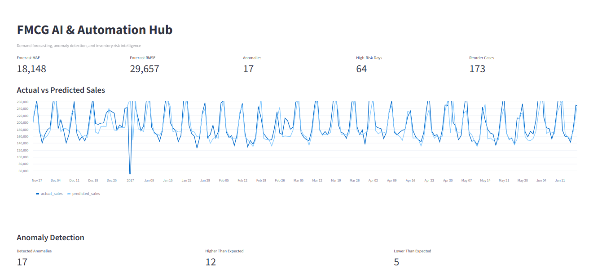

Software Engineering
C# · .NET · WinForms · SQL Server · OOP · application logic · POS/business systems · Git
SOFTWARE DEVELOPMENT • AI AUTOMATION • TECHNICAL SYSTEMS
I'm Cesar Al Khatib, a Computer Science graduate and technical support professional working across C#/.NET, SQL, web development, systems troubleshooting, and applied AI automation.
cesar@portfolio:~
$ whoami
Cesar Al Khatib
$ cat focus.txt
csharp_dotnet
sql_and_business_systems
ai_automation
react_web
technical_support
$ status
● building, learning, shipping
$ _
My background combines software development, SQL, web systems, technical support, networking fundamentals, and years of leading day-to-day business operations.
I enjoy building tools that have a clear purpose: a POS system that supports retail workflows, a forecasting dashboard that surfaces demand risk, or a deployed web product that people can actually use.
C# · .NET · WinForms · SQL Server · OOP · application logic · POS/business systems · Git
Python · Pandas · scikit-learn · forecasting · feature engineering · anomaly detection · MAE/RMSE · Streamlit
JavaScript · React · Vite · HTML · CSS · PHP · WordPress · GitHub Pages · Cloudflare
L1 support · workstation deployment · hardware/software troubleshooting · SQL-assisted investigation · networking · routing/switching/firewall fundamentals
An end-to-end FMCG decision-support project using real grocery-retail data. It combines demand forecasting, residual-based anomaly detection, simulated inventory-risk classification, reorder recommendations, and automated management insights.

LIVE DASHBOARD ↗A retail point-of-sale and business-management system built around practical store workflows. Stockly POS focuses on cashier operations and back-office management, while Stockly Mobi extends the system with a separate C# companion interface.
A responsive technology-services platform built with React and Vite. The project covers front-end development, GitHub workflow, domain configuration, and production deployment through Cloudflare.
Responsive portfolio sites developed, versioned with Git, and published with GitHub Pages. The work focuses on tailored visual identity, responsive layouts, lightweight deployment, and real shareable demos.
Application, workstation, and network troubleshooting; deployment; remote/on-site support; SQL-assisted investigation; and installation/commissioning support.
Led branch operations and staff, coordinated inventory and production workflows, and trained teams on systems and printing equipment.
Maintained the WordPress website, built front-end improvements, created digital content, and monitored web and social performance.
Managed a 25+ person team, POS operations, inventory, sales targets, customer service, and staff training.
Modern University for Business and Science
Lebanese University
Developing Economic Empowerment and Protection Program
Cisco Networking Academy
Open to software development, AI/automation, data, and technical systems opportunities.